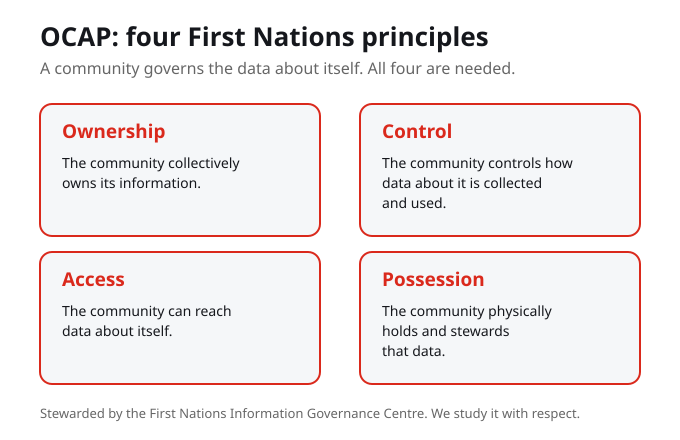
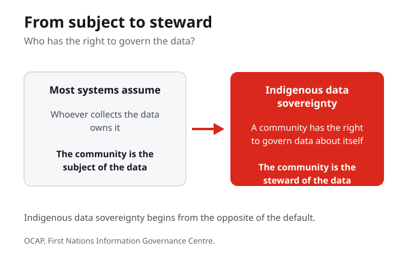
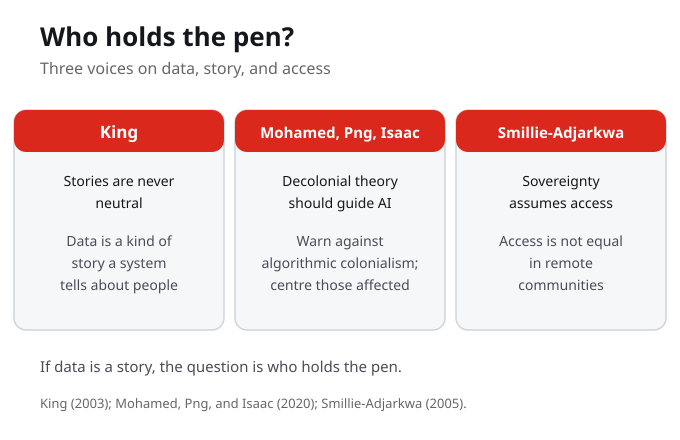

1. Indigenous data sovereignty is best described as the right of a community to:
2. OCAP stands for Ownership, Control, Access, and:
3. In OCAP, Possession means that the community:
4. OCAP is stewarded by the:
5. Mohamed, Png, and Isaac (2020) argue that AI development should be guided by:
6. Thomas King reminds us that stories are never neutral. The lesson for data is that data is:
7. Smillie-Adjarkwa points out that sovereignty assumes access, which:
Week 8 opens Part III by reframing the central question from bias to governance. Students learn Indigenous data sovereignty and the OCAP principles as a model of agency, and meet decolonial approaches to AI.
By the end of this week you should be able to

OCAP names four First Nations principles, stewarded by the First Nations Information Governance Centre. Ownership means the community owns its information; Control means it controls how data is collected and used; Access means it can reach data about itself; Possession means it physically holds and stewards that data. All four are needed: ownership without possession is hollow, and access without control is thin. OCAP belongs to First Nations, so we study it with respect, not as a generic toolkit.
OCAP names four principles, not one. Ownership without possession is hollow, and access without control is thin. The point is the set, held together, not any single right on its own.

Here is the pivot. Most systems assume that whoever collects the data owns it; the community is the subject of the data, not its steward. Indigenous data sovereignty begins from the opposite: a community has the right to govern the data about itself. From subject to steward.
The default question is who collected the data, so the default answer is whoever collected it owns it. Indigenous data sovereignty asks a different question, and so it reaches a different answer: the community has the right to govern data about itself.
Most systems assume whoever collects data owns it. What changes if the community owns it instead?
OCAP names four First Nations principles, stewarded by the First Nations Information Governance Centre. Ownership: the community owns its information. Control: it controls how data is collected and used. Access: it can reach data about itself. Possession: it physically holds and stewards that data. All four are needed; ownership without possession is hollow, access without control is thin.
Each OCAP principle protects a different thing. Ownership protects the community's claim to its information, Control protects how it is collected and used, Access protects the community's reach to its own data, and Possession protects who physically holds and stewards it. Drop one and a gap opens that the others cannot close.

Thomas King reminds us that stories are never neutral, and data is a kind of story a system tells about people. So the question is, who holds the pen? Mohamed, Png, and Isaac add that decolonial theory should guide AI, warning against algorithmic colonialism and calling to centre those most affected. And Smillie-Adjarkwa reminds us that sovereignty assumes access, which is not equal in remote communities.
If data is a kind of story a system tells about people, then the governing question is who holds the pen. Mohamed, Png, and Isaac name the risk when the pen is held elsewhere, algorithmic colonialism, and Smillie-Adjarkwa names a precondition often assumed away, that access is not equal in remote communities.
If data is a kind of story, who has been telling the story of which communities, and who should hold the pen?
So when you meet a data system, ask who owns, controls, accesses, and possesses the data now, and what would change if the community governed it. Represent Indigenous frameworks with care.
Four questions travel with you out of this week: who owns, who controls, who accesses, and who possesses the data now. The fifth question is what would change if the community governed it instead. Ask them with care, and represent Indigenous frameworks with respect, not as a generic toolkit.
Indigenous data sovereignty is the right of a community to govern the collection, ownership, and use of data about itself. It moves the community from the subject of the data to its steward, reversing the default assumption that whoever collects data owns it.
Ownership, Control, Access, and Possession each protect something distinct, and all four are needed together. Ownership without possession is hollow and access without control is thin. OCAP is stewarded by the First Nations Information Governance Centre and belongs to First Nations, so it is studied with respect, not as a generic toolkit.
Mohamed, Png, and Isaac (2020) argue that decolonial and postcolonial theory should guide how AI is built. They warn against algorithmic colonialism, where tools made elsewhere are imposed on communities, and call for centring those most affected in how systems are designed and governed.
If data is a kind of story a system tells about people, the question is who holds the pen. Thomas King reminds us that stories are never neutral, and Smillie-Adjarkwa reminds us that sovereignty assumes access, which is not equal in remote communities. Governance only works where a community can actually reach its data.
Part III opened by examining technological benevolence, the framing that new tools arrive to help. This week reframes the central question from bias to governance, asking not only whether a system is fair but who has the right to govern the data it runs on.
Indigenous data sovereignty and the OCAP principles give us a working model of agency. Ownership, Control, Access, and Possession name what a community can hold, and Mohamed, Png, and Isaac add a decolonial frame for AI itself. The pivot is from the community as subject of the data to steward of the data.
From a model of who should govern data, the course turns to what stands in the way. Ahead we examine gatekeeping, who controls access to systems and knowledge, and resistance, how communities push back. Sovereignty names the goal; the weeks to come trace the obstacles and the responses.
OCAP says a community should own and control the data about itself. Most systems you use assume the opposite, that whoever collects the data owns it. If data is a kind of story about people, who has been telling the story of your community, and what would change if your community held the pen?
Your notes save automatically on this device and stay after you close your browser or shut down. Use Save my notes (below) to download a copy you can keep or open on another device.
The pivot at the heart of this week is the move from the community as:
Why are all four OCAP principles needed together?
Mohamed, Png, and Isaac warn against algorithmic colonialism, which is when:
When you meet a data system, the questions this week tells you to ask are who owns, controls, accesses, and:
Decolonial AI, in Philosophy and Technology. Focus on how decolonial and postcolonial theory is used as sociotechnical foresight, what algorithmic colonialism means, and what it looks like to centre those most affected in the design and governance of systems.
The Truth About Stories, the Massey Lectures. Read for the claim that stories are never neutral, then carry it across to data: if data is a kind of story a system tells about people, ask who has been telling the story and who holds the pen.
Is the Internet a Useful Resource for Indigenous Women Living in Remote Communities? Read for why sovereignty assumes access, and why access is not equal in remote communities, so that governance is not treated as a settled precondition.
Mohamed, S., Png, M.-T., and Isaac, W. (2020). Decolonial AI: Decolonial theory as sociotechnical foresight in artificial intelligence. Philosophy & Technology, 33, 659-684. https://doi.org/10.1007/s13347-020-00405-8
King, T. (2003). The truth about stories: A native narrative. House of Anansi Press (Massey Lectures).
Smillie-Adjarkwa, C. (2005). Is the internet a useful resource for Indigenous women living in remote communities? National Network for Aboriginal Mental Health Research.
Source note: OCAP is described here from its widely published principles. For any direct quotation, consult the First Nations Information Governance Centre's own OCAP statement.